Everything on Appointments
In the office app, press Help and type everything on appointments
: the tour plays on your own screen, with your own data.
-
 1
1Appointments
Sales visits, call-backs, collections and tasks for everyone. Each one sits on someone's day, so nothing is left without a date.
-
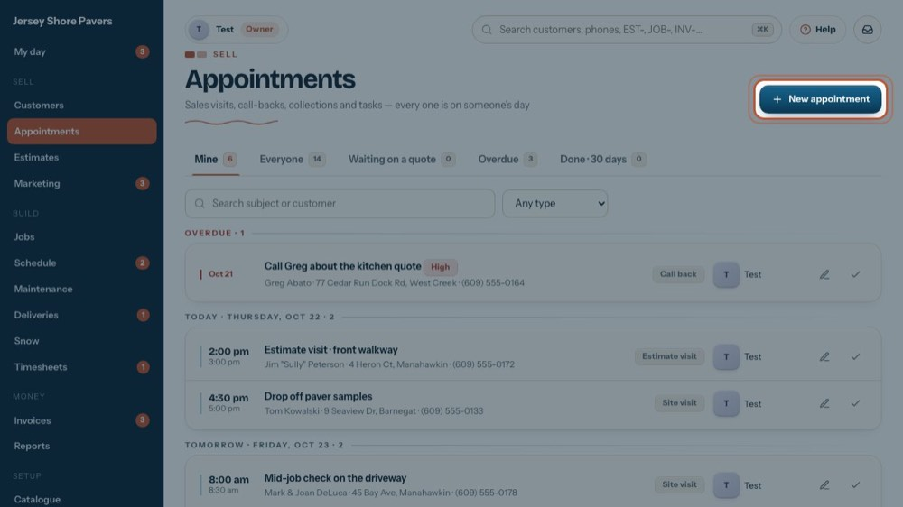
2New appointment
Opens the booking form. Let's have a look.
-
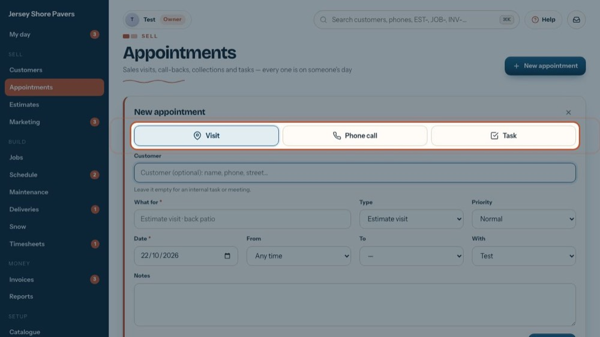
3Visit, phone call or task
Pick what it is, then the customer, what for, date, time and who. The tour "Book a visit, a phone call or a task" walks every field.
-
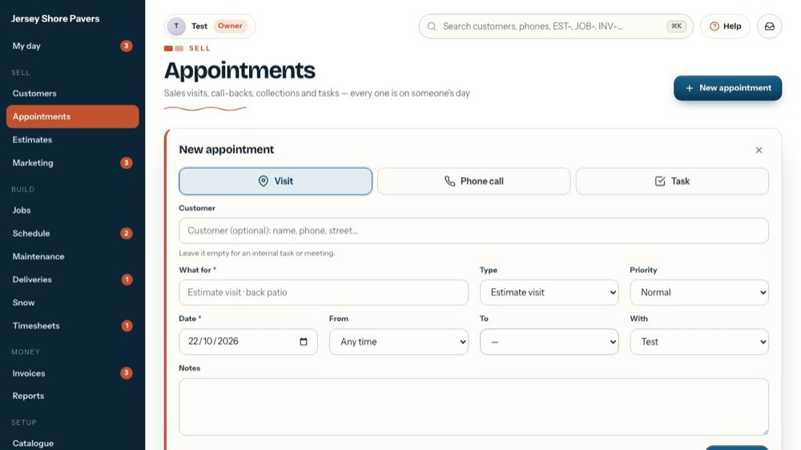
4Close it
Close it without booking.
-
 5
5Mine
Your own open appointments and tasks. The numbers on the tabs are counts.
-
 6
6Search
Find one by subject, customer or place.
-
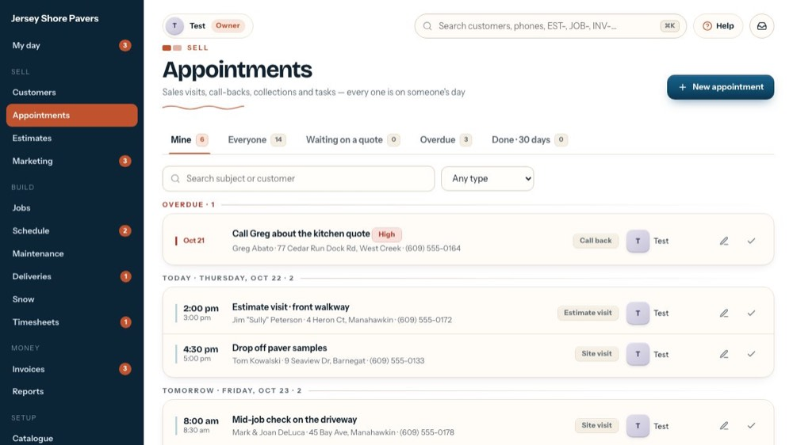
7By type
Estimate visit, Site visit, Call back, Collection, Service or Other.
-
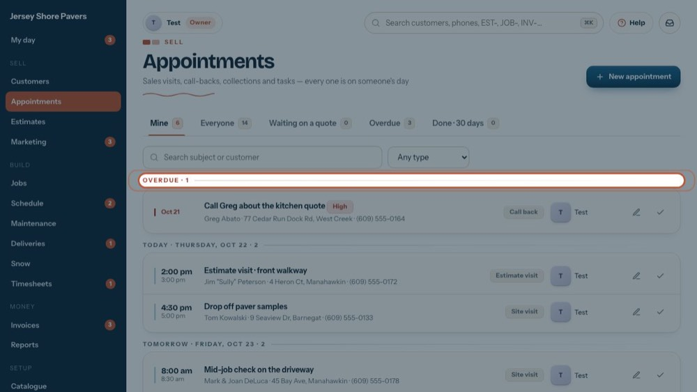
8Grouped by day
Overdue first in red, then Today, Tomorrow and the days after, with how many on each.
-
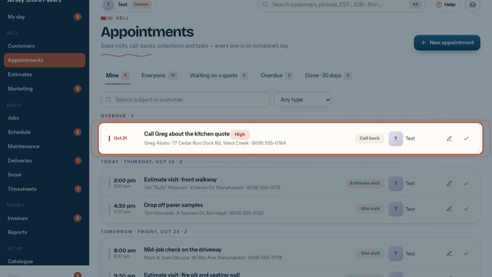
9One appointment
The time (or Any time), what it's for, the customer, place and phone, a camera if the visit sent notes or photos, the type and who has it.
-
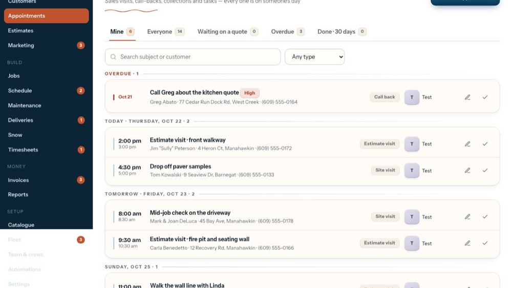
10Open it
Click the line to open it.
-
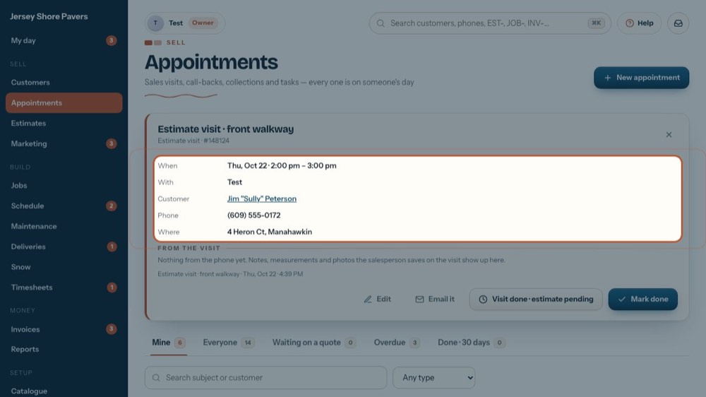
11The details
When, with whom, the customer (click the name to open them), phone, address and the office notes.
-
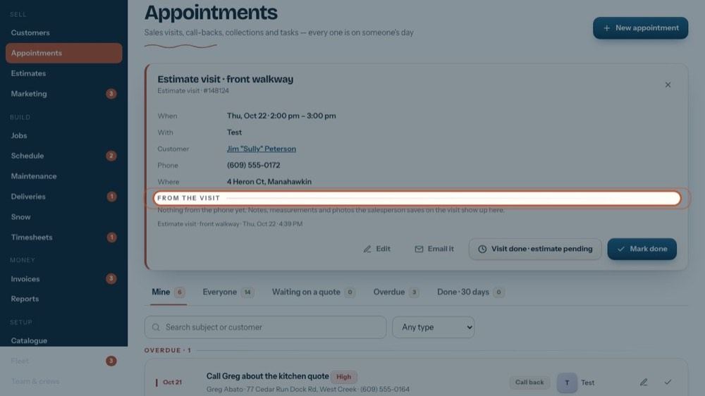
12From the visit
Notes, measurements and photos the salesperson saved on the visit from the phone. Until then it says nothing came back yet.
-
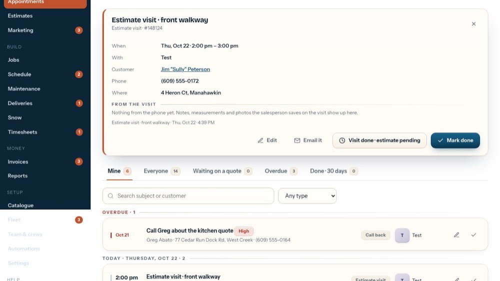
13Edit, visit done, mark done
Edit changes it. Visit done · estimate pending puts an estimate visit on Waiting on a quote. Mark done closes it. The tour presses none of them.
-
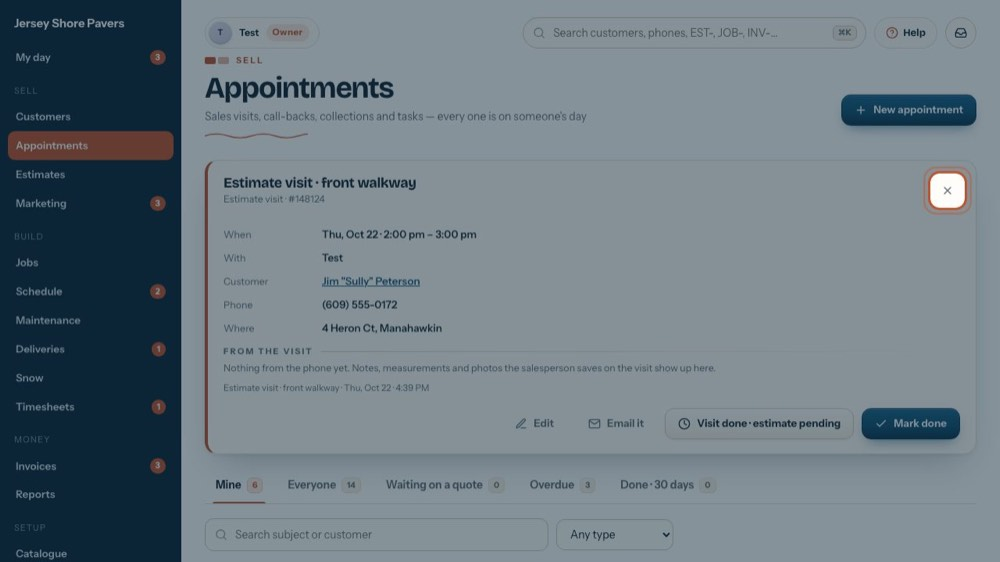
14Close it
The X closes it.
-
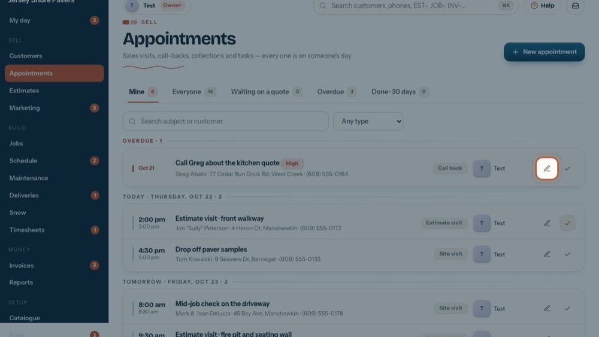
15Edit
The pencil opens the form to change the day, time, person or details.
-
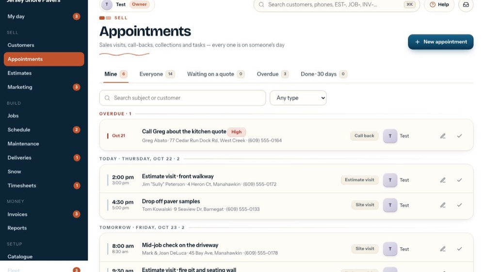
16Mark done
The tick marks it done. It moves to Done · 30 days.
-
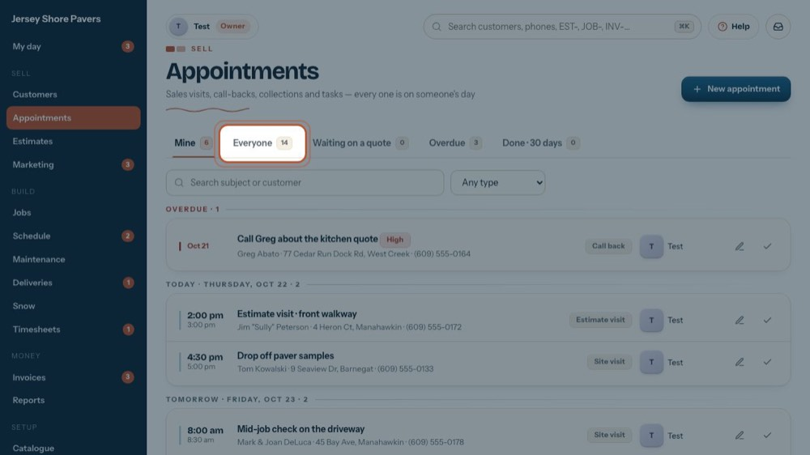
17Everyone
Every open appointment, whoever has it.
-
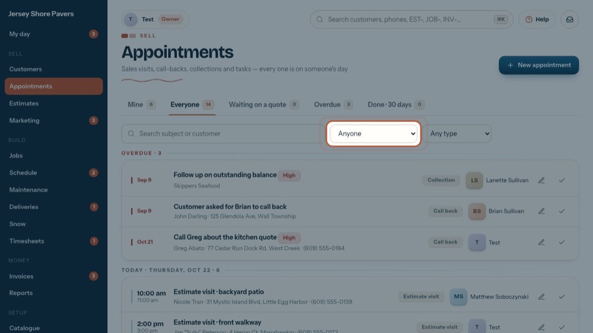
18By person
Pick one person to see only theirs. It isn't on Mine, which is always yours.
-
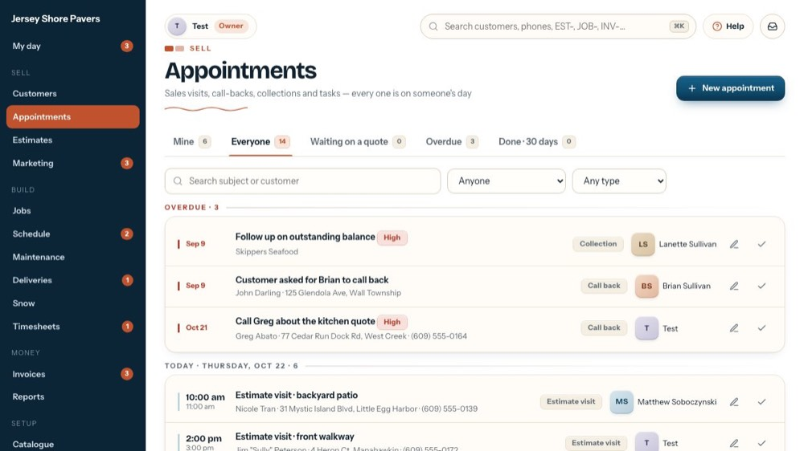
19Waiting on a quote
Estimate visits marked Visit done · estimate pending: the quote is still to write. Mark the visit done once the estimate has gone out.
-
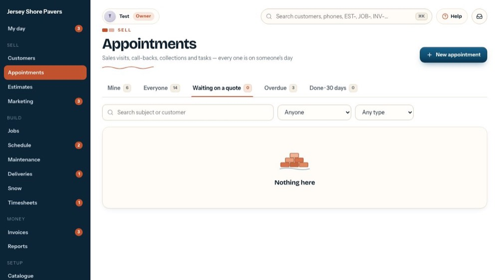
20Overdue
Everything past its date and still open, for everyone. Call, move it with the pencil, or mark it done.
-
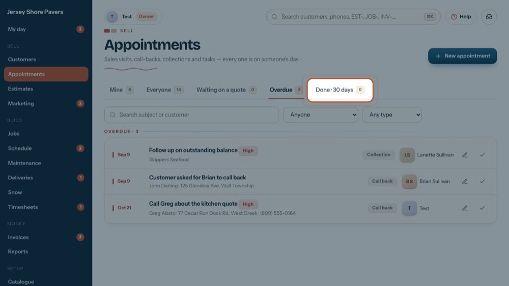
21Done · 30 days
What was finished in the last 30 days, newest first. The arrow on a line reopens it.